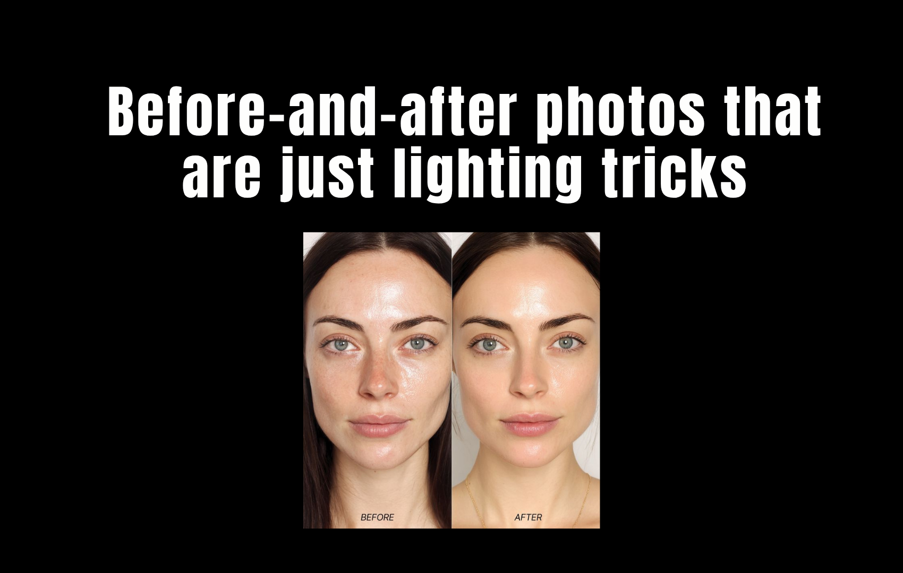

A before-and-after photo is the most persuasive format in beauty marketing. It implies a controlled comparison. It implies the only variable that changed was the product. It implies that what you're seeing is a result.
Almost none of that is true. Before-and-after photos in beauty advertising are almost never controlled comparisons. They are art-directed shoots where the "before" is deliberately made to look worse and the "after" is deliberately made to look better — using lighting, angle, posture, makeup, expression, and post-production. The product is often incidental.
Here are five documented techniques, with real examples of how they're used.

Before-and-after photos are not regulated as advertising in most markets — brands can use lighting, angles, and editing freely.
Example 1
The Overhead Harsh Light vs. Soft Diffused Light Switch
Used by: Anti-aging creams, foundation brands, pore-minimizing serums
Trick: Lighting DirectionThe "before" photo is taken with a single overhead light source — the harshest possible setup for skin. Overhead lighting creates shadows in every pore, line, and texture variation on the face. It's the same light that makes everyone look tired in a fluorescent office bathroom.
The "after" is taken with soft, diffused frontal lighting — the kind used in professional portrait photography. Frontal diffused light fills in shadows, minimizes the appearance of texture, and makes skin look smoother, more even, and more luminous. No product required.
Example 2
The Posture and Chin Angle Shift
Used by: Jawline-defining creams, neck firming products, body contouring brands
Trick: Camera Angle + PostureIn the "before," the subject is photographed from slightly below eye level with their chin slightly down — the most unflattering angle for the jaw and neck. Skin bunches, the jawline softens, and any natural fullness under the chin is maximized.
In the "after," the camera is at eye level or slightly above, and the subject has elongated their neck and lifted their chin. The jawline sharpens, the neck lengthens, and the under-chin area disappears. This is a posture change worth more than any topical product on the market.
Example 3
The Expression Change
Used by: Anti-wrinkle creams, eye serums, forehead treatments
Trick: Facial ExpressionThe "before" subject has a slightly tense or neutral expression — brows slightly furrowed, eyes slightly squinted, lips pressed together. These micro-expressions activate the muscles that create the lines the product claims to treat: forehead lines, crow's feet, nasolabial folds.
The "after" subject is relaxed — brows lifted slightly, eyes open, lips softly parted. A relaxed face has fewer visible lines than a tense one. This is not a product result. It's the difference between a tense face and a relaxed one, photographed under different lighting.
Example 4
The Skin Prep Difference
Used by: Pore-minimizing products, primers, skin-smoothing serums
Trick: Makeup + Skin PrepThe "before" is taken on bare, unprepared skin — often after the subject has been asked not to moisturize, which makes skin look drier and more textured than usual. The "after" is taken after the product has been applied, but also after the skin has been moisturized, primed, and in many cases had a light layer of foundation or skin tint applied.
A 2021 investigation by a UK consumer watchdog found that in 7 of 10 "before-and-after" ads reviewed, the "after" image had visible signs of makeup application that the "before" did not. The brands argued the makeup was disclosed in the small print. The small print was in 6-point font at the bottom of a full-page ad.
Example 5
The Post-Production Frequency Separation Edit
Used by: Virtually every major skincare brand at some point
Trick: Digital RetouchingFrequency separation is a retouching technique that separates the texture of an image from its color and tone, allowing editors to smooth skin tone without visibly blurring texture. When done subtly, it's nearly undetectable — the skin looks even and clear while still appearing to have natural texture. It's the technique that makes retouched skin look "real" rather than plastic.
It is also completely invisible to the untrained eye, which is why it's the preferred technique for before-and-after ads that need to appear unretouched. The ASA (UK Advertising Standards Authority) has upheld complaints against brands using this technique without disclosure, but enforcement is inconsistent and penalties are minimal.
The Regulation Gap

Professional lighting rigs can make the same skin look dramatically different in seconds — no product required.
In the US, the FTC requires that before-and-after photos represent "typical results" — but enforcement is reactive, not proactive. Brands are not required to submit their advertising for review before publishing it. Complaints must be filed, investigated, and adjudicated before any action is taken. By then, the campaign has run its course.
The UK's ASA has been more aggressive, banning specific ads from L'Oréal, Lancôme, and others for misleading before-and-after imagery. But the fines are small relative to the marketing budgets involved, and the same techniques reappear in the next campaign under slightly different framing.
The most effective protection is knowing what to look for. The five techniques above cover the majority of before-and-after manipulation in beauty advertising. Once you see them, you can't unsee them.